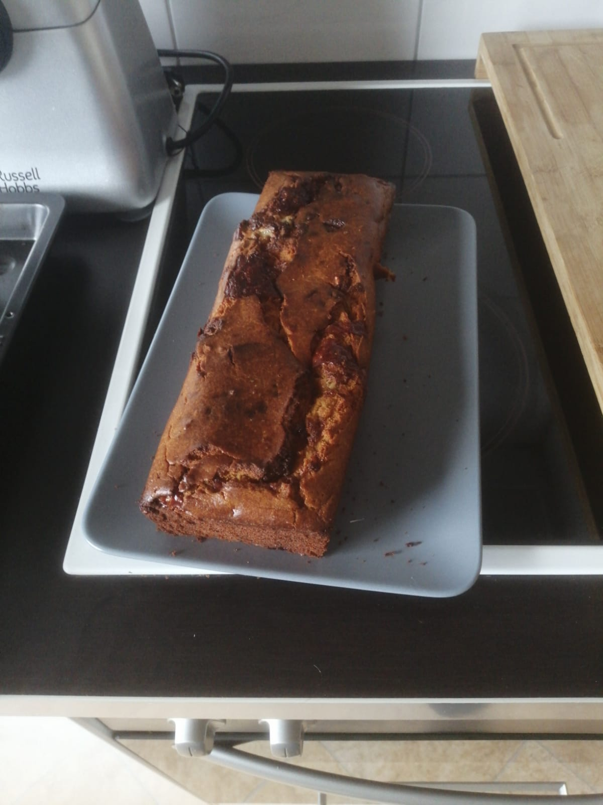

Roquefort Cake

Description
There are few recipes in the world that have such an interesting difficulty to taste ratio as this roquefort cake recipe.
Ingredients
- 3 eggs
- 200 g. white flour
- 100 g. butter
- about 14g. baking powder
- 15 cl. milk
- 125 to 150 g. roquefort
- 50 g. parmesan
- 2 table spoon honey
- 12 nuts
- a couple of raisins (optional)
- pinch of salt (roquefort is already salty)
- pepper
Steps
- Pre-heat the oven at 180°C
- At low temperature, gently melt the butter in a sauce pan
- Beat the eggs in a big bowl and add the flour, baking powder, salt, and pepper until combined
- Add honey in the sauce pan when the butter is melted
- Pour the content of the sauce pan into the bowl
- Cut the roquefort and the nuts in bits
- Gently add the roquefort, the nuts, and the parmesan in the bowl with the rest of the ingredients
- Put in the oven and bake for 45 minutes